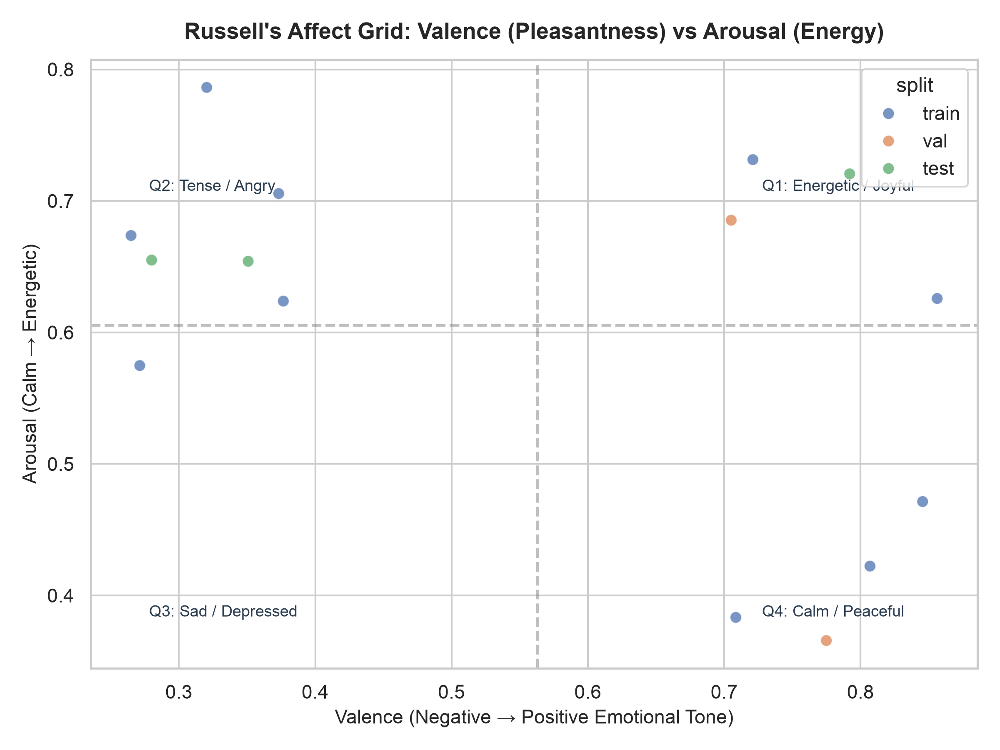
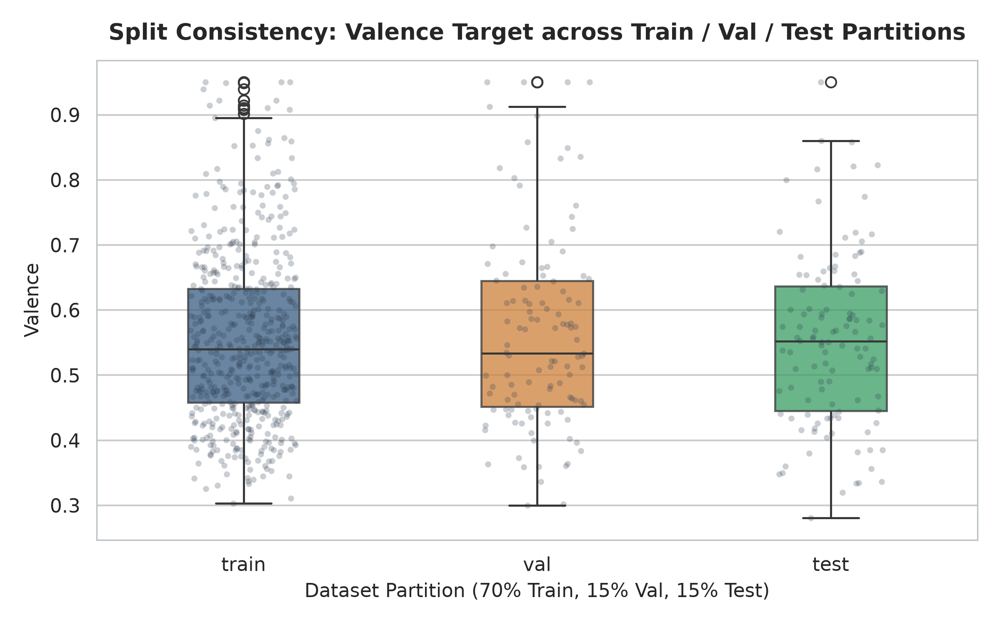
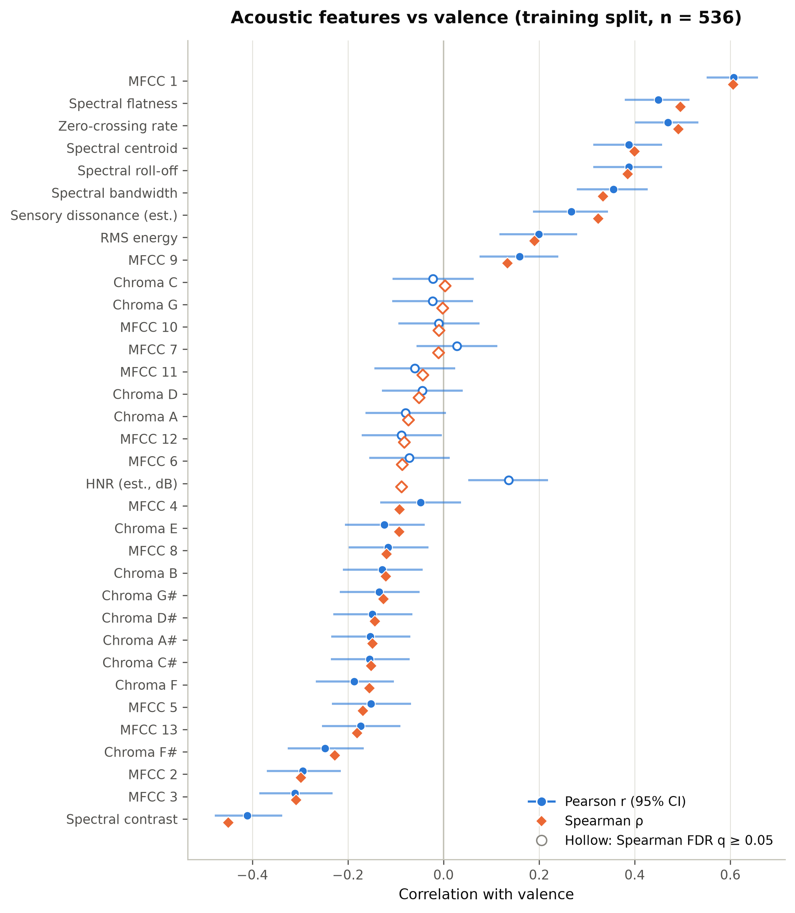
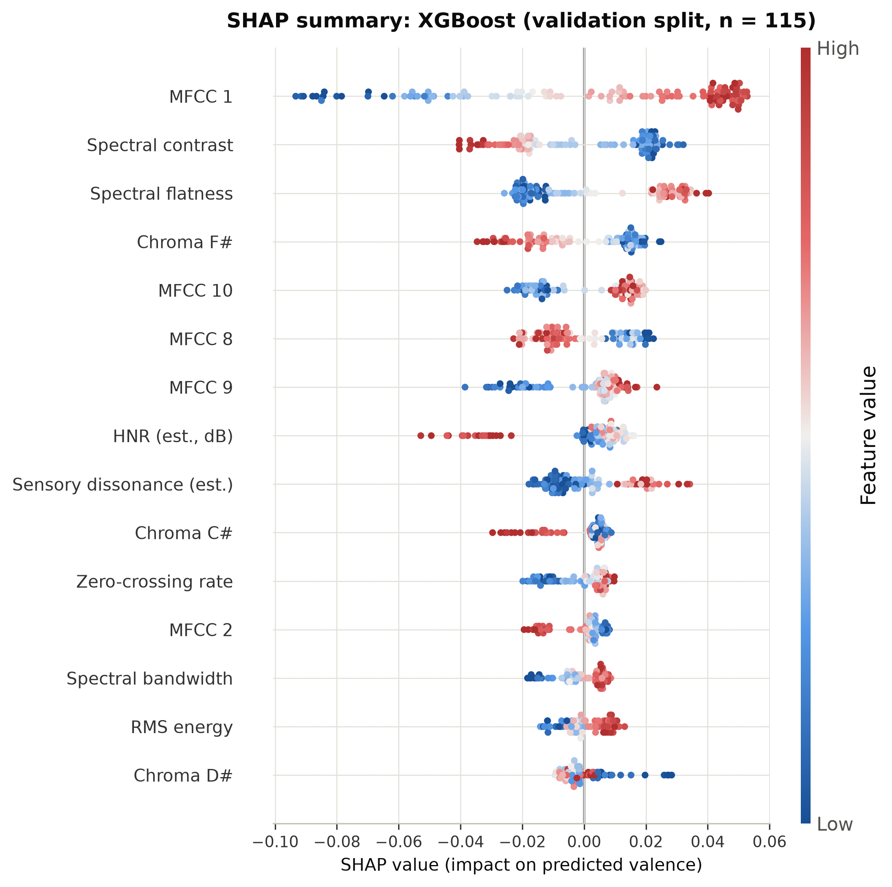
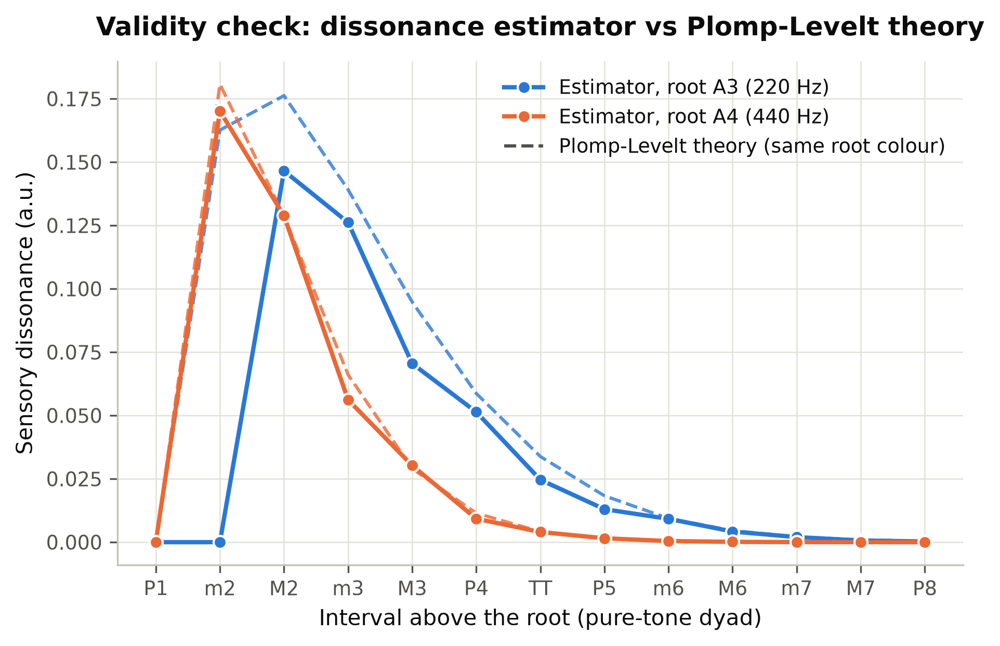
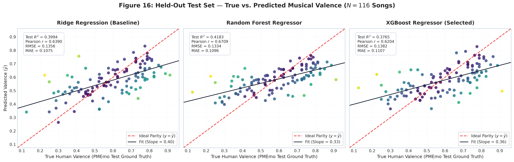
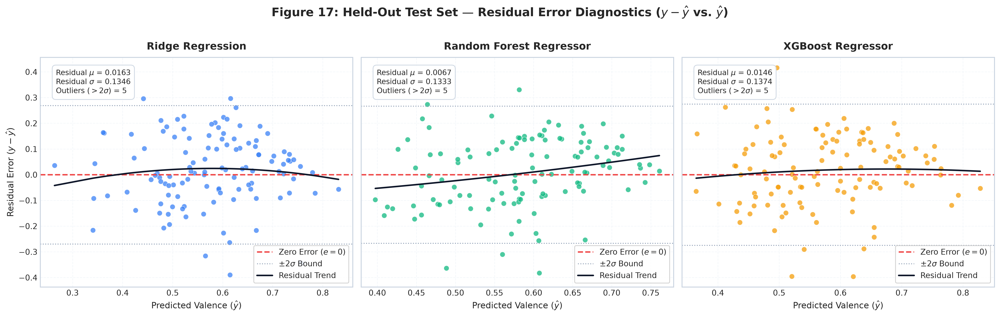
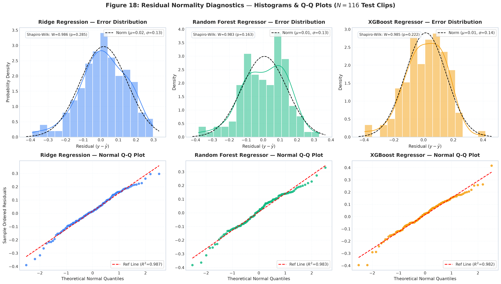

The Science of Musical Perception
Predicting Human-Rated Musical Valence from Sound Waves using Wave Physics, Digital Signal Processing, and Classical Machine Learning
HarmoniX Phase 1 Team Distribution
5 team members assigned distinct, non-overlapping modules corresponding strictly to the CSAI evaluation rubric.
Can Sound Waves Predict Pleasantness?
Isolating physical sound wave mechanics from linguistic and cultural semantic comprehension.
- Arousal: Physiological activation & energy (loudness, tempo). Highly correlated with raw sound wave energy.
- Valence: Hedonic pleasantness / positivity vs negativity. The fundamental challenge in MIR because it depends on subtle harmonic and timbral relationships.

PMEmo Dataset & Leakage Safeguards
Architecting a reproducible, zero-leakage data pipeline with identical target distributions.
- Total Audio Files Audited: 794 MP3 chorus excerpts (22.05 kHz mono).
- Matched Annotations: 767 verified songs with static valence/arousal.
- Train Split (70%): 536 songs used for scaler fitting and cross-validation.
- Validation Split (15%): 115 songs for hyperparameter selection.
- Untouched Test Split (15%): 116 songs held out strictly for final evaluation.
music_id with zero clip overlap across folds.

34-Dimensional Acoustic Feature Vector
Translating continuous sound wave dynamics into fixed-length mathematical descriptors.
Spectral Contrast: Peak-to-valley ratio.
Spectral Flatness: Noise vs. tonality.
Roll-off & Bandwidth: Energy spread.
Zero-Crossing Rate: Waveform polarity shifts per second, tracking high-frequency noise.
Three Competitive Architectures
Comparing linear regularized benchmark against bagging and boosting tree ensembles.
Correlations & The Arousal Confounder
Praanshu's analysis revealed that many apparent "valence" features actually track arousal.
- Collinearity: Valence & arousal correlate at $\rho = 0.69$ in PMEmo ($p < 10^{-70}$).
- 24 of 34 features have statistically significant correlations with valence under Benjamini-Hochberg FDR control ($q < 0.05$).
- The Spectral Centroid Reality Check: Raw correlation with valence is $\rho = 0.40$ ($q < 10^{-20}$). However, once arousal is controlled via partial correlation, $\rho_{\text{partial}} = -0.002$ ($q = 0.97$)!
- Insight: Brighter songs are not rated positive because of brightness itself; they are rated positive because they are energetic!

What Drives Model Predictions?
SHAP summary values confirm that timbral texture and spectral contrast dominate decision boundaries.
1. MFCC 1: Dominates both Random Forest (mean |SHAP| = 0.029) and XGBoost (0.040). Captures overall spectral power.
2. Spectral Contrast: Strong negative relationship (mean |SHAP| = 0.021). Flatter spectral contrast indicates fuller, denser instrumentation.
3. Spectral Flatness: Tonal resonance vs noise (mean |SHAP| = 0.021).
By Feature Family: Spectral shape (0.038) and MFCC timbre (0.052) contribute 70%+ of predictive mass.

The Sensory Dissonance Paradox
Why did dissonance correlate positively with valence ($\rho = +0.32$)? A reality check on real songs.
Common intuition suggests: Dissonance $\to$ Unpleasant $\to$ Negative Valence. But our probe on 200 songs revealed:
- On pure tone dyads at 440 Hz, our estimator matches Plomp-Levelt theory accurately.
- However, in polyphonic pop choruses, the estimator correlates $\rho = 0.969$ with peak energy balance across the 30 spectral peaks!
- Takeaway: In PMEmo songs, the feature is not tracking microtonal dissonance; it is tracking full, well-produced, commercial arrangements!

Held-Out Test Set Results ($N = 116$)
The strictly untouched test partition was evaluated across all models. Random Forest wins!
| Model | 5-Fold CV RMSE | Validation $R^2$ | Test MAE | Test RMSE | Test $R^2$ | Test Pearson $r$ [95% CI] | Test Spearman $\rho$ |
|---|---|---|---|---|---|---|---|
| Ridge (Baseline) | 0.1138 | 0.4123 | 0.1075 | 0.1356 | 0.3994 | 0.6390 [0.52, 0.74] | 0.6514 |
| Random Forest 🏆 | 0.1166 | 0.4320 | 0.1096 | 0.1334 | 0.4183 | 0.6709 [0.56, 0.76] | 0.6934 |
| XGBoost | 0.1174 | 0.4464 | 0.1107 | 0.1382 | 0.3765 | 0.6204 [0.49, 0.72] | 0.6424 |
Figure 16: Actual vs. Predicted Valence
Comparing model predictions against the ideal 45-degree parity diagonal ($y = \hat{y}$).

Homoscedasticity & Regression to Mean
Residual error plots ($y - \hat{y}$ vs. $\hat{y}$) and Gaussian normality diagnostics.


Why Random Forest Beat XGBoost on Test Data
Understanding the generalization gap between Bagging and Boosting on affective audio data.
- Drop from Val to Test: Only $-0.0137$ ($R^2: 0.4320 \to 0.4183$).
- Mechanism: Averages 50 completely independent trees with randomized feature subsets ($\sqrt{p}$).
- Effect: Drastically suppresses variance caused by subjective human rating noise.
- Drop from Val to Test: Dropped $-0.0699$ ($R^2: 0.4464 \to 0.3765$).
- Mechanism: Sequentially fits residuals of previous trees.
- Effect: Chases idiosyncratic interactions in the validation set on a small $N=536$ dataset.
Phase 2: Deep Learning & Spectrograms
Bridging classical physics feature engineering with 2D Convolutional Neural Networks.
src/evaluate.py • reports/phase1_report.pdf • reports/test_evaluation_results.csv • Figures 16–19